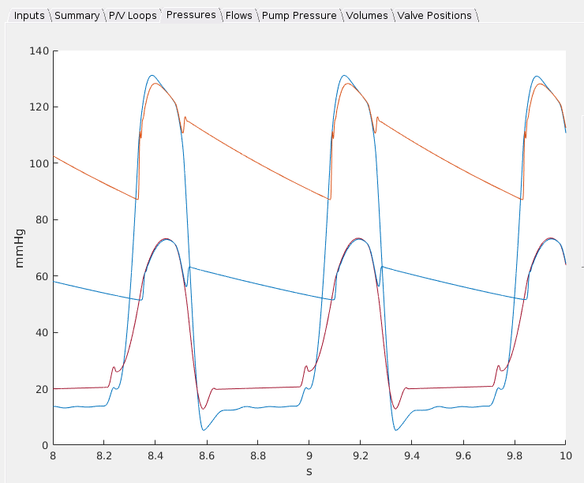

About the Virtual Mock Loop
The Virtual Mock Loop is a numerical simulation of the cardiovascular system. It can simulate healthy and diseased cases with a variety of different combinations of conditions.
The system includes several different models of ventricular assist devices. The user can specifiy the speed settings as well as the design point of the pump.
The program simulates the hemodynamics of the cardiovascular system with a lumped parameter model. The output of the system includes the pressure, volume, and flow through each of the major parts of the circulatory system as it varies over several seconds. An example output screen is shown below. It compares left ventricular and aortic pressure in a healthy and diseased case.
